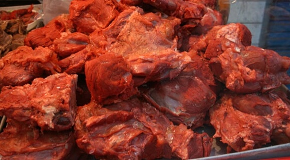

腊牛肉在西安已有近百年的历史，是西安的名小吃之一。它选料考究、工艺精良、辅料齐全、火功得当，卤出的肉质地酥粒、色泽红润、香醇可口。西安腊牛羊肉，慈禧太后嗜吃的一段轶闻。清光绪二十六年（1900年），八国联军侵占北京，慈禧太后偕光绪皇帝仓惶出走，经山西逃到西安。在朝政不力，皇权欲坠的形势下，慈禧强打精神，亲自出巡，炫示“圣恩”。有一天清晨，她乘坐御辇，途经古长安（今西安市）西大街，车子在上坡缓缓而行，忽闻到一股浓郁的香气，慈禧不禁暗暗称奇，喝令停车询问，方知是一家腊牛羊肉店正在烹肉，好香的腊味。于是要“御口恩尝”。品尝之后，大加赞赏并传谕列为贡品。今天的腊牛肉已成为馈赠亲朋好友的佳品，你一定要买一点回去。保鲜问题你不必担心，真空包装一般可以保鲜10天左右。
选用新鲜黄牛，宰杀后配以青盐、芒硝、 八角、桂皮、草果、花椒、小茴等调料，经制坯配料，卤制和上色等工序制成。腌肉时将牛肉皮面相对折叠排放在大缸内，添入清水，撒进食盐、芒硝，腌2-5天。腌透。煮肉时先将老卤汤倒入锅内，加入等量清水，放入调料包，用旺火烧开后再酌加食盐，放在肉板匕用重物压紧，改用小火们煮3-4小时，至肉酥骨离时捞入盘内，再用原汁汤冲洗肉面，去原汁，用净布沥干即成。